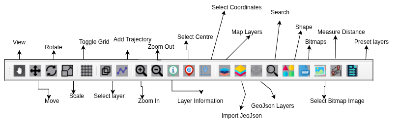

Design Toolbar
{kind=link}

View - This is the main screen where you see the map data.
Move - Drag to slide the map in any direction.
Rotate - Turn the map to a different orientation.
Scale - Increase or decrease the size of an object or layer.
Toggle Grid - Switch the background grid lines on or off.
Select Layer - Choose a specific layer from the list to edit.
Add Trajectory - Draw a path or line to show a route or movement.
Zoom In - Get a closer, more detailed view of a smaller area.
Zoom Out - See a larger area with less detail.
Layer Information - View the details and properties of the selected layer.
Select Centre - Set a new point to be the center of the map screen.
Coordinates System - The system that defines locations on the map.
Map Layer - A set of data that can be shown or hidden on the map.
Import GeoJson - Add a GeoJSON file from your computer to the map.
GeoJson Layer - A layer created from imported GeoJSON data.
Search - Type a name to find a location and jump directly to it.
Shape - Draw your own geometric shapes.
Bitmaps - Work with picture files on the map.
Select Bitmap Image - Choose an image from your computer to place on the map.
Measure Distance - Calculate the real-world distance between points.
Preset Layer - You are selecting from ready-made data sets that are already configured for the map.